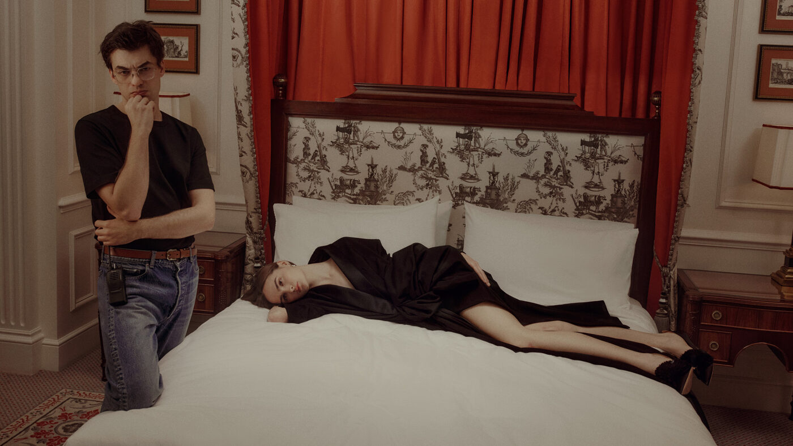

Fifteen new creative directors. Three cities. One season. Spring/Summer 2026 will be remembered not for any single collection but for the sheer, unprecedented scale of reinvention — a generational changing of the guard that touched nearly every major house in European fashion and rewrote the terms on which heritage and invention coexist.
Nothing in modern fashion history quite compares. Even the storied reshufflings of the mid-nineteen-nineties — when Tom Ford arrived at Gucci, John Galliano at Dior, Alexander McQueen at Givenchy — involved a handful of appointments spread across several seasons. What happened this past September and October was something else entirely: a concentrated, simultaneous reset in which the industry’s most powerful houses entrusted their futures to a new generation of designers, many of whom had spent years building reputations at smaller or rival labels. The result was a season that felt less like a series of fashion shows and more like a thesis on what luxury means when everything is in motion.
Paris: the houses that changed everything
The appointment that drew the most attention was, inevitably, Matthieu Blazy’s move to Chanel. Having transformed Bottega Veneta into the most intellectually rigorous house in Italian fashion, Blazy arrived at 31 Rue Cambon with the kind of credibility that cannot be manufactured. His debut collection ran to seventy-seven looks — an extraordinary number that signalled not excess but ambition, a refusal to be constrained by the edited, commercial logic that has governed recent Chanel collections. The vocabulary was one of borderless blending: tweed dissolving into jersey, embroidery that appeared to grow organically from fabric rather than being applied to it, silhouettes that referenced Coco Chanel’s original liberation of the female body without ever lapsing into pastiche. It was a collection about freedom, and it felt earned.
At Dior, Jonathan Anderson brought the kind of conceptual rigour that had made Loewe the most talked-about house in fashion for the better part of a decade. His restructured Bar jacket — Monsieur Dior’s founding gesture, reimagined with the proportions subtly shifted and the construction exposed — was a statement of intent: this would be a Dior that honoured its origins by questioning them. The surrealistic millinery, collaborations with ceramic artists, and a runway that felt more like a gallery installation than a fashion show confirmed that Anderson intends to treat Dior as a cultural project, not merely a commercial one.
Demna’s debut at Gucci took a deliberately different approach. Rather than staging a conventional runway, he presented “La Famiglia” — a lookbook shot in domestic interiors, the clothes worn by real families rather than professional models. It was a provocation, certainly, but also a deeply considered one: Demna was arguing that Gucci’s identity has always been rooted in the Italian family, in the idea of dressing as an expression of belonging rather than aspiration. Whether it will translate commercially remains to be seen, but as a creative statement it was among the most distinctive debuts of the season.
This was not a season of arrivals. It was a season of arguments — each new creative director making the case for what fashion can still be when it chooses substance over spectacle.
The Splendid EditPierpaolo Piccioli’s arrival at Balenciaga was perhaps the most poignant appointment of the cycle. Having spent a decade at Valentino building one of the most emotionally resonant bodies of work in contemporary fashion, Piccioli chose to anchor his Balenciaga debut not in Demna’s recent legacy but in Cristóbal Balenciaga’s own archive — specifically, the 1957 Sack dress, that radical, body-obscuring silhouette that scandalised Paris and liberated an entire generation of women from the corseted New Look. Piccioli’s reinterpretation was characteristically emotional: voluminous, colour-saturated, constructed with the architectural precision that only Balenciaga’s ateliers can achieve. It was heritage as living practice, not museum display.

Matthieu Blazy, Chanel Spring/Summer 2026 — Photography courtesy of Wallpaper*
Milan and London: the quieter revolutions
If Paris commanded the headlines, Milan and London produced debuts that were no less significant for being less theatrical. Michael Rider’s first collection for Celine was a masterclass in tonal precision — Vipiana-era silks and the house’s Parisian minimalism threaded through with a preppy Americana that felt entirely natural rather than grafted on. Rider understood that Celine’s power lies in its refusal to shout, and his collection whispered with real authority.
Glenn Martens at Maison Margiela inherited one of the most complex legacies in fashion — a house founded on deconstruction, anonymity and intellectual provocation. His response was to lean into his Belgian avant-garde roots, producing a collection that treated Margiela’s founding principles not as a brand identity to be preserved but as a methodology to be extended. Garments were taken apart and reassembled with visible seams and exposed linings, but the effect was one of warmth rather than austerity — Martens finding humanity in Margiela’s conceptual framework.
Louise Trotter’s arrival at Bottega Veneta — filling the vacancy left by Blazy’s departure for Chanel — was among the most closely watched appointments. Trotter, who had quietly built a devoted following during her years at Joseph and Lacoste, chose to make intrecciato the language of her debut rather than its decoration. The house’s signature weave appeared not as a surface treatment but as a structural principle, informing the cut and drape of garments in ways that felt genuinely new. It was a debut that suggested Bottega Veneta’s next chapter may be its most intellectually ambitious.
The wider reset
Beyond these headline appointments, the season brought new creative directors to Versace, Jean Paul Gaultier, Mugler, Loewe and Jil Sander — each house navigating its own particular tension between archive and reinvention. The cumulative effect was extraordinary: an entire industry turning over simultaneously, forced to articulate what it stands for in the absence of the designers who had defined it for the previous decade.
What united the strongest debuts was a refusal to treat heritage as nostalgia. Blazy did not recreate Chanel; he reimagined the impulse behind it. Anderson did not replicate the Bar jacket; he interrogated its construction. Piccioli did not revive the Sack dress; he understood why it mattered. In each case, the designer engaged with the house’s history as a living conversation rather than a fixed text — and in doing so, demonstrated that the creative director model, so often dismissed as creatively bankrupt, can still produce work of genuine originality.
Whether all fifteen appointments will endure is, of course, unknowable. Fashion’s history is littered with brilliant debuts that led nowhere and unpromising ones that evolved into greatness. But as a collective moment — as a statement about the industry’s capacity for self-renewal — Spring/Summer 2026 was without precedent. The great reset is complete. The work of building something lasting has only just begun.